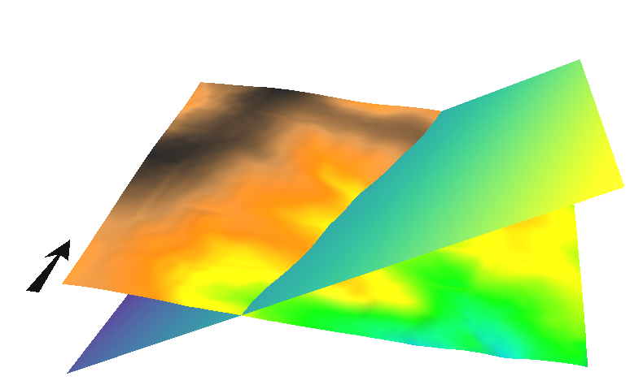

DESCRIPTION
r.plane creates a tilted plane raster map given user-specified
parameters for inclination, azimuth, and the geographic location of a
point on the plane.
The angle orientations of the azimuth parameter increase counter-clockwise,
i.e., 0 degree = N, 45 degree = NW, 90 degree = W etc.
Increasing values of the dip parameter progressively lower (or dip) the northern
half of the plane, and incline the southern half, assuming the azimuth parameter
is held constant at 0 degrees.
NOTES
g.region -c provides the easting and northing coordinates for
the center of the current region.
CELL (integer) maps take less disk space than FCELLs (floating point),
which in turn take up less space than DCELLs (double precision floating point).
EXAMPLE
A tilted plane in the North Carolina sample dataset region:
# set computational region
g.region raster=elev_lid792_1m -p
# get center coordinates as an example
g.region -c
# get terrain height at point
r.what map=elev_lid792_1m coordinates=638650.0,220375.0
# shows elevation: 116.7734
# generate tilted plane
r.plane myplane30 dip=30 az=75 east=638650.0 north=220375.0 \
elev=116.7734 type=FCELL

Figure: Tilted plane shown in NVIZ along with elevation map
AUTHOR
Stefan Jäger (1994), University of Heidelberg during a stay at USGS
Updated to GRASS 5.7 by Michael Barton, Arizona State University
Full rewrite for GRASS 7 by Glynn Clements
{kind=link}